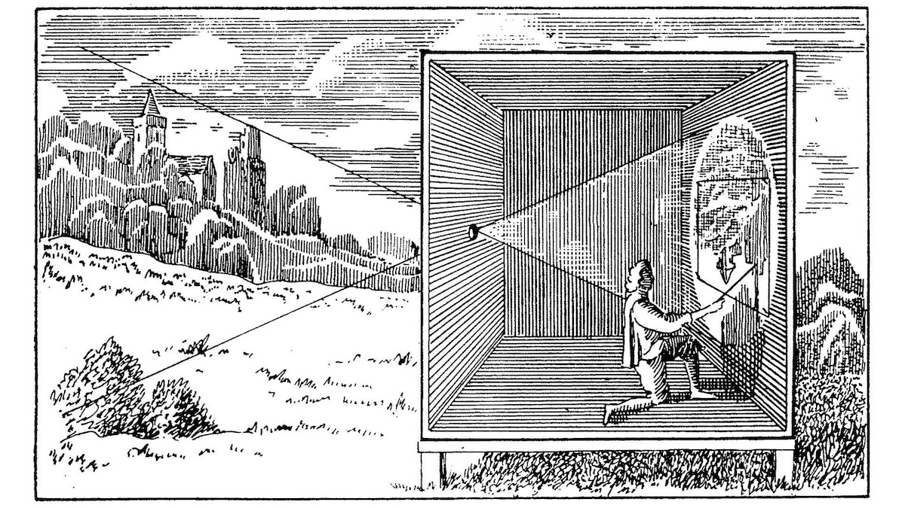

Kamera Obscura: Tarihin İlk Fotoğraf Makinesi
Fotoğrafçılığın temelini atan buluşlardan biri olan Kamera Obscura, görüntülerin nasıl kaydedilebileceğini ve yeniden yaratılabileceğini gösteren önemli bir cihazdır. Latince’de “karanlık oda” anlamına gelen Kamera Obscura, ışığın bir delikten geçerek karşı duvara ters bir görüntü yansıtması prensibine dayanır. Bu basit ama etkileyici buluş, modern fotoğraf makinelerinin gelişiminde önemli bir adım olmuştur. İlk olarak Antik Yunan ve Çin’de bilinen bu yöntem, yüzyıllar boyunca gelişim göstererek fotoğrafçılığın temel yapı taşı olmuştur.
Kamera Obscura’nın Tarihçesi oldukça eskilere dayanmaktadır. İbni Heysem, 11. yüzyılda ışığın doğrusal hareketini açıklarken Kamera Obscura prensibini ilk bilimsel temellere oturtan isimdir. Heysem, güneş tutulmalarını güvenli bir şekilde gözlemlemek için bu yöntemi kullanmış, ışığın bir delikten geçip nasıl bir görüntü oluşturduğunu açıklamıştır. Bu çalışma, daha sonra Avrupalı bilim insanları tarafından geliştirilerek fotoğrafçılığın temelini atmıştır.

Rönesans döneminde ise Kamera Obscura, sanatçılar tarafından sıkça kullanılmıştır. Özellikle perspektif konusunda ustalaşmak isteyen ressamlar, doğru açı ve oranlarda çizim yapabilmek için bu cihazdan faydalanmışlardır. Örneğin, ünlü ressam Johannes Vermeer’in eserlerinde Kamera Obscura’yı kullandığına dair kanıtlar bulunmuştur. Vermeer’in tablolarında görülen detaylı ışık oyunları ve gerçekçi perspektif, bu cihazın kullanımıyla elde edilmiştir.

17 ve 18. yüzyıllarda ise Kamera Obscura’nın taşınabilir versiyonları geliştirilmeye başlandı. Cihazın küçük modelleri, sanatçılar ve bilim insanları tarafından daha rahat kullanılabilir hale getirildi. Bu dönemde, özellikle doğa gözlemleri ve şehir manzaralarının daha hassas ve doğru bir şekilde kopyalanabilmesi için taşınabilir Kamera Obscura modelleri popüler hale geldi.

Fotoğrafçılık alanındaki ilerlemelerle birlikte Kamera Obscura’nın ilkeleri, modern kameraların gelişimine ilham kaynağı olmuştur. 19. yüzyılda, kimyasal fotoğrafçılığın doğuşuyla birlikte görüntüler artık sadece geçici olarak değil, kalıcı olarak kaydedilebilmiştir. Louis Daguerre ve Joseph Nicéphore Niépce gibi isimler, kimyasal plakalar üzerine kalıcı görüntüler yakalamak için Kamera Obscura’nın prensiplerinden yararlanmışlardır.
Modern fotoğraf makineleri, Kamera Obscura’nın temel prensiplerine dayansa da, gelişen teknoloji sayesinde çok daha karmaşık ve gelişmiş hale gelmiştir. Özellikle lens sistemlerinin gelişimi ve ışığın hassas bir şekilde kontrol edilmesi, modern kameraların çok daha net ve detaylı görüntüler yakalamasını sağlamıştır. Ancak, Kamera Obscura’nın basit yapısı, fotoğrafçılığın mantığını anlamak için hala önemli bir eğitim aracı olarak kullanılmaktadır.
Kamera Obscura Nasıl Çalışır?
Kamera Obscura oldukça basit ama etkileyici bir çalışma prensibine sahiptir. Temel olarak, karanlık bir kutu ya da oda içinde çok küçük bir delik (pin-hole) bulunmaktadır. Bu delikten içeri giren ışık, dışarıdaki görüntünün ters çevrilmiş şekilde karşı duvara yansımasına neden olur. Kamera Obscura’nın çalışma prensibi bu şekilde açıklanabilir:
- Işığın Girişi: Dışarıdan gelen ışık, karanlık kutu ya da odanın dışına yerleştirilen bir nesneden ya da manzaradan gelir. Delikten geçen ışık, görüntünün bir parçası olur.
- Delik ve Işığın Kırılması: Işık, delikten geçerken dağılmadan ve düz bir hat üzerinde ilerler. Ancak, ışığın geçtiği yer çok dar olduğu için görüntü ters döner. Bu, görüntünün üst kısmının altta, alt kısmının ise üstte oluşmasına neden olur.
- Görüntünün Yansıması: Delikten geçen ışık, kutunun ya da odanın karşı tarafında bulunan bir yüzeye yansır. Bu yüzey, görüntünün projeksiyonunu oluşturur. Görüntü genellikle ters (aşağı yukarı, sağ sola) olur, çünkü ışık düz bir çizgide hareket eder ve bu dar geçiş alanında kırılma meydana gelir.
- Odaklanma: Eğer delik çok büyük olursa, görüntü bulanık olur çünkü çok fazla ışık girer ve ışık ışınları farklı açılardan yüzeye yansır. Ancak, delik küçükse, ışık daha az girer ve görüntü daha net olur. Modern kameralar, bu prensip doğrultusunda lensler kullanarak ışığı daha iyi odaklayarak daha net görüntüler elde eder.
- Yansımanın İyileştirilmesi: Bazı Kamera Obscura sistemlerinde, yansıyan görüntü daha belirgin hale getirilmek için yüzey olarak cam veya beyaz bir ekran kullanılabilir. Böylece dışarıdaki manzaranın detayları daha iyi görülebilir.
Bugün hala Kamera Obscura, eğitim ve sanat alanında kullanılmaktadır. Birçok sanat müzesi ve bilim merkezinde, bu eski cihazın modern versiyonları sergilenmekte ve ziyaretçilere görsel illüzyonların nasıl çalıştığını anlatmak için kullanılmaktadır. Bu sayede insanlar, fotoğrafçılığın tarihsel gelişimini daha yakından inceleyebilme fırsatı bulmaktadır.
Kamera Obscura’nın fotoğrafçılığa katkıları günümüzde de takdir edilmektedir. Görüntülerin nasıl oluştuğunu ve ışığın doğrusal hareketini anlamaya yönelik bu buluş, fotoğraf sanatının temel taşıdır. Fotoğrafçılığa ilgi duyan birçok insan, Kamera Obscura’yı inceleyerek ışığın ve görüntünün nasıl bir araya geldiğini daha iyi kavramaktadır.
Sonuç olarak, Kamera Obscura, insanlığın görsel dünyayı anlama çabasında önemli bir dönüm noktasıdır. Basit bir karanlık oda prensibiyle başlayan bu yolculuk, bugün milyonlarca insanın hayatında yer eden fotoğraf makinelerinin doğmasına yol açmıştır. Kamera Obscura, tarihin en önemli optik buluşlarından biri olarak fotoğrafçılığın temelini atmıştır.